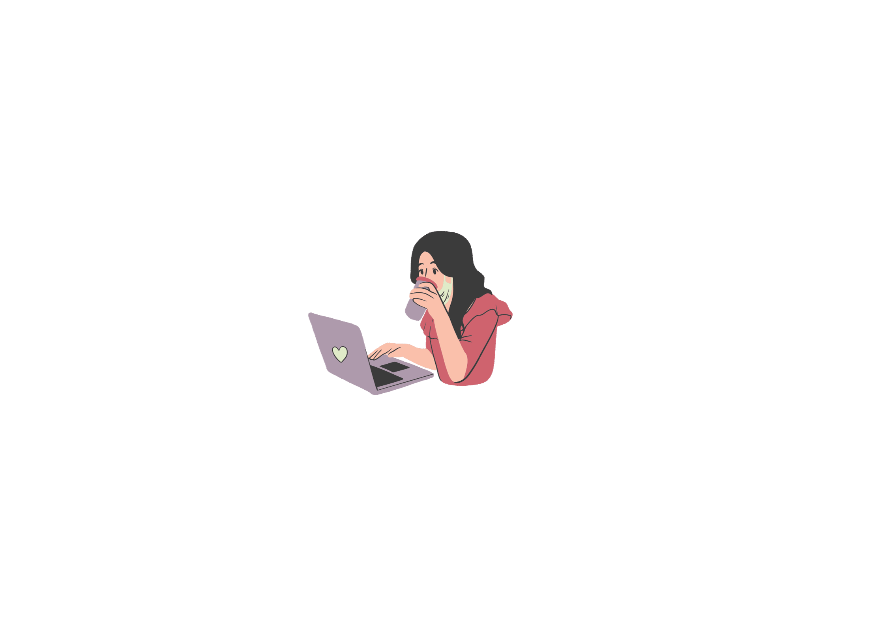

Hallo !!
Nama Saya Waode Miranda
Saya Berkuliah Di Universitas Muhammadiyah Buton
Mengambil Jurusan Rekayasa Sistem Komputer
Suka mempelajari hal-hal baru dan pembelajar cepat
About Me
Deskripsi singkat tentang saya,
Penggemar desain web yang muda dan bersemangat dalam perjalanan pengembangan diri dan kreativitas yang mengasyikkan.
Dengan kecintaan yang tulus terhadap penciptaan pengalaman digital, saya mampu menghadapi tantangan dalam memadukan bakat artistik dan teknis
keahlian untuk membuat situs web yang menakjubkan secara visual dan fungsional.
Skill
Ini beberapa keterampilan yang saya miliki dan masih ditingkatkan